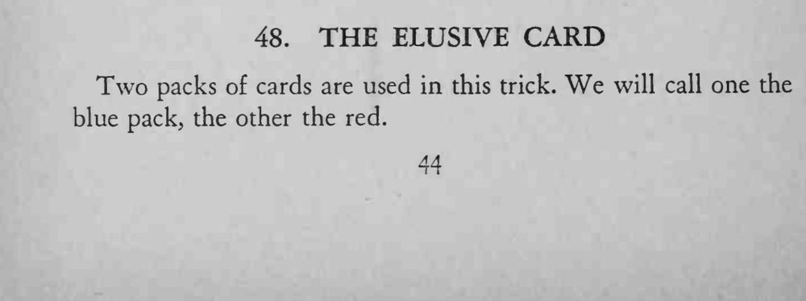
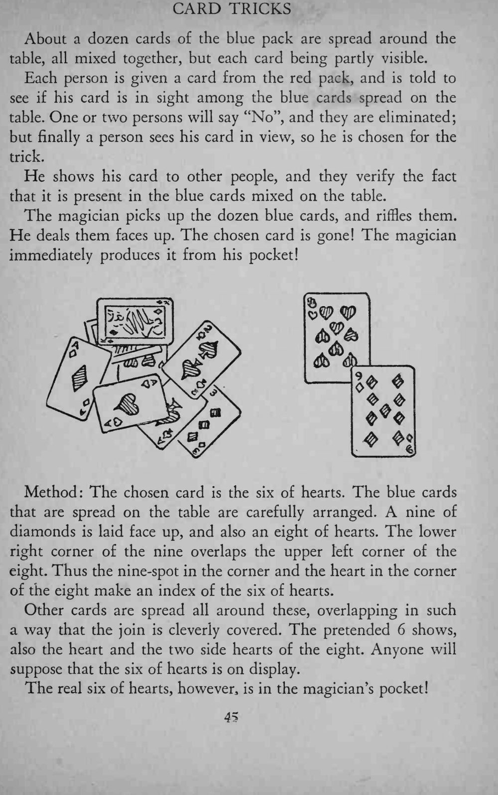
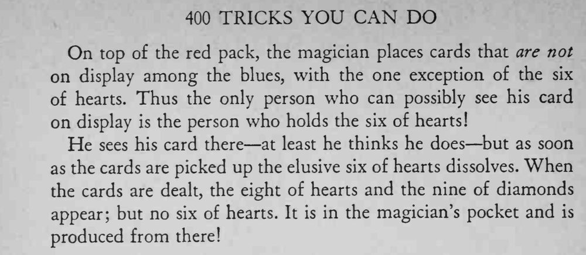

观众在桌上散开的蓝背牌里清楚看到自己的牌，魔术师把牌一收、再牌面朝上发开，那张牌却不见了，随后从他口袋里变了出来。
红背牌顶上要放那些没在蓝牌里展示的牌，只留红心 6，才能保证只有一个人上钩。



Two packs of cards are used in this trick. We will call one the blue pack, the other the red. About a dozen cards of the blue pack are spread around the table, all mixed together, but each card being partly visible. Each person is given a card from the red pack, and is told to see if his card is in sight among the blue cards spread on the table. One or two persons will say "No", and they are eliminated; but finally a person sees his card in view, so he is chosen for the trick. He shows his card to other people, and they verify the fact that it is present in the blue cards mixed on the table. The magician picks up the dozen blue cards, and riffles them. He deals them faces up. The chosen card is gone! The magician immediately produces it from his pocket! Method: The chosen card is the six of hearts. The blue cards that are spread on the table are carefully arranged. A nine of diamonds is laid face up, and also an eight of hearts. The lower right corner of the nine overlaps the upper left corner of the eight. Thus the nine-spot in the corner and the heart in the corner of the eight make an index of the six of hearts. Other cards are spread all around these, overlapping in such a way that the join is cleverly covered. The pretended 6 shows, also the heart and the two side hearts of the eight. Anyone will suppose that the six of hearts is on display. The real six of hearts, however, is in the magician's pocket! On top of the red pack, the magician places cards that are not on display among the blues, with the one exception of the six of hearts. Thus the only person who can possibly see his card on display is the person who holds the six of hearts! He sees his card there at least he thinks he does but as soon as the cards are picked up the elusive six of hearts dissolves. When the cards are dealt, the eight of hearts and the nine of diamonds appear; but no six of hearts. It is in the magician's pocket and is produced from there!